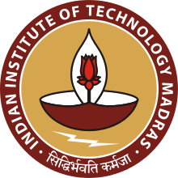

|  |
Sathvik JoelComputer Science & EngineeringIndian Institute of Technology Madras |
UG Third Year (B.Tech.)Email: ksjoe30@gmail.com(+91)6281213917 |
| Examination | Univeristy | Institute | Year | CGPA |
|---|---|---|---|---|
| Graduation | IIT Madras | IIT Madras | 2024 | 9.06 |
| Intermediate/+2 | BIEAP | Aditya Junior College | 2019 | 10.0 |
| Matriculation | BSEAP | Aditya High School | 2017 | 10.0 |
| Programming | C, C++, Python |
| ML Frameworks | Pytorch, Pandas, Numpy, Seaborn |
| Softwares | Git, LATEX, Flex, Bison |
| Pattern Recognition and Machine Learning | Information Theory |
| Data Structures and Algorithms | Object Oriented Programming Lab |
| Operating Systems | Probability And Statastics |